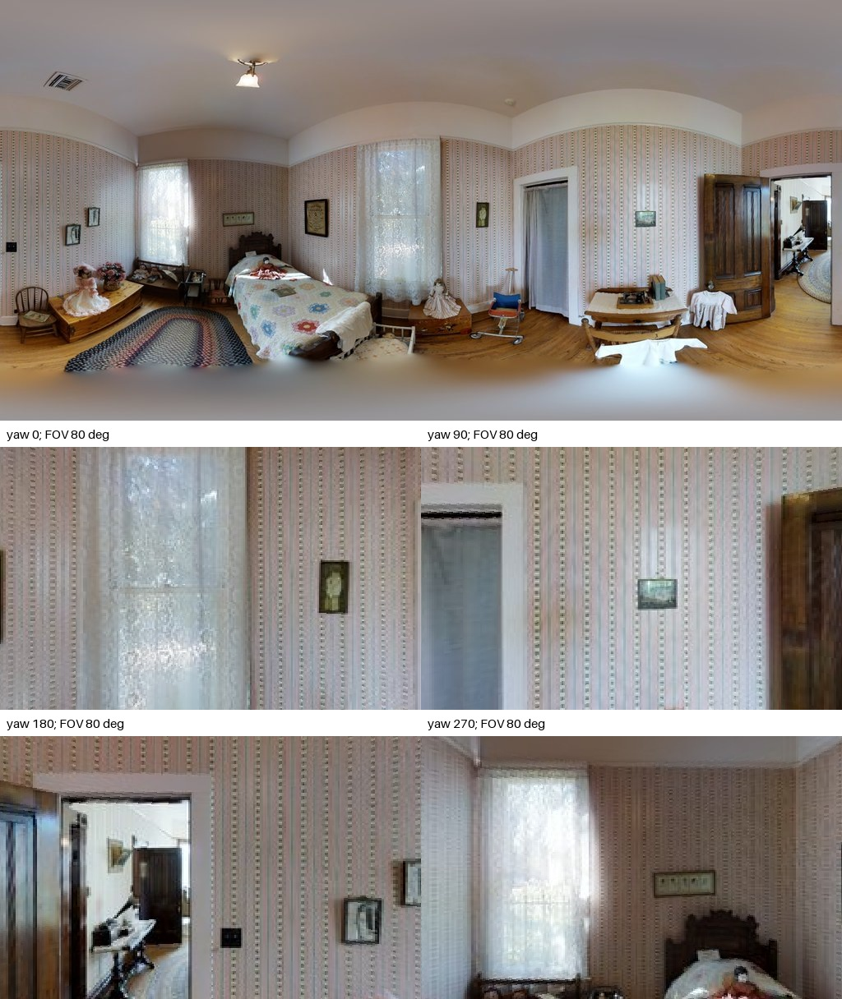
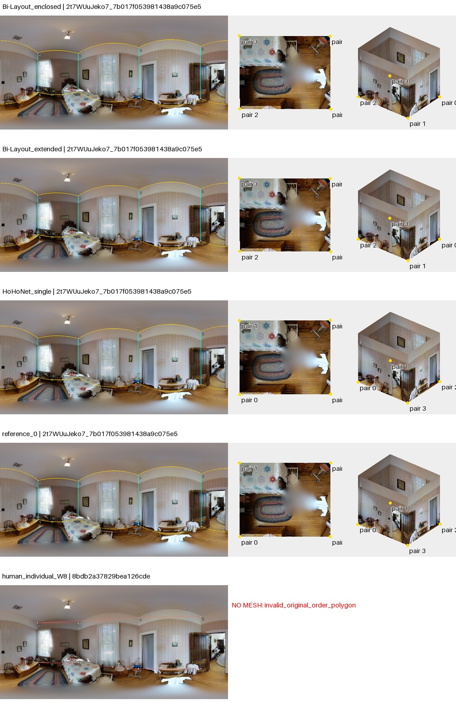
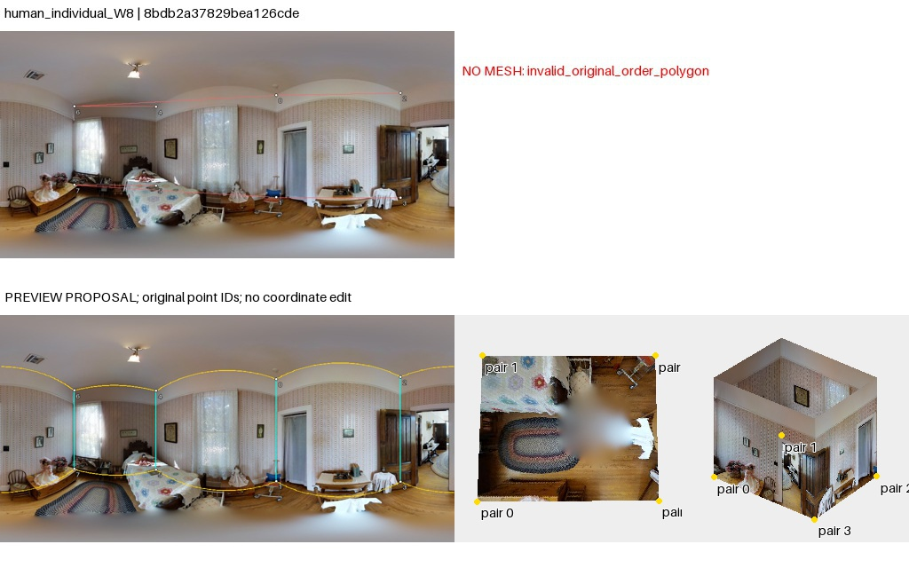

点序复查：旧失败图红线为脚本直连诊断，不是作者墙边证据。导出列表不等于已核实的邻接；重排仅是假设。50图核查与勘误
2t7WUuJeko7_7b017f053981438a9c075e599f2c5866
AI建议；人工最终判断为空。先看原图，再展开布局。图中3D采用单位相机高度、单全景回投影；不是扫描真值。
原始PNG · 2048×1024；点击图片查看原尺寸。下面的旧拼图仅作概览。

墙纸卧室，天花边界有可见转折，家具及窗帘遮住多数地墙接触；右侧开门见邻室。是否保留门洞内延伸及小墙面转折需核对，不能仅用矩形假定。
左窗原始几何，右窗为工具的约束拟合诊断；拟合结果不等于正确标注。无法读取的点组保留失败。高清显示升级未重新裁定旧观察。

双头相同，模型和参考均为近四边形；可见吊顶/墙顶的细小折线不全等于地面墙角。W8原点连接交叉，无3D网格，不能据此判定房间多解。
待人工判断：地面四边形近似是否符合Manhattan规则；W8序列应如何对应？
04_human_individual_W8：visual_candidate_pending_human；卧室外圈四角与顶部墙线可辨，床和窗帘遮住部分下角。W8四组点的重排预览与这个外圈大体相容，可作为辅助候选；原序直连自交不能证明原点标错。无需移动坐标，仍需核对床边与门口的下角位置。
